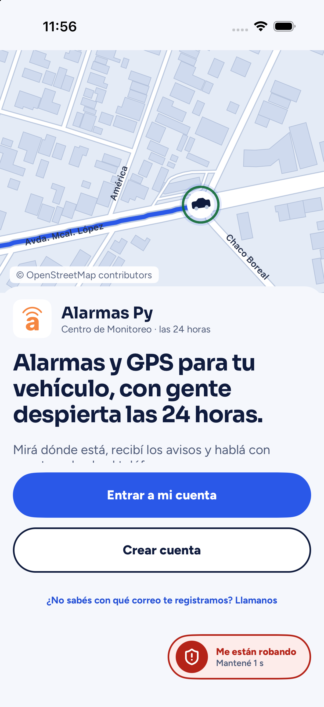
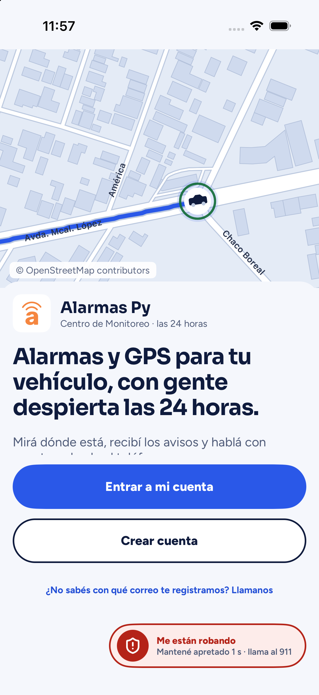
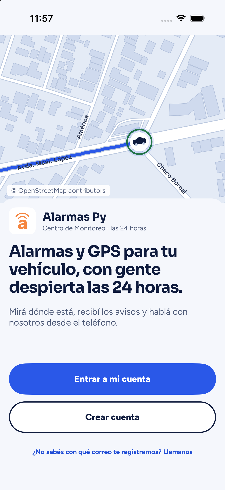

Alarmas Py · app · medido el 20-sep-2026, 10:43–10:46
El botón «Me están robando», antes de entrar a la cuenta
Carlos lo vio en la pantalla de bienvenida y dijo que estaba errado. Acá están las tres versiones, la misma pantalla y el mismo teléfono, para elegir mirando.
Qué hace hoy ese botón, medido
Si lo mantenés apretado un segundo en esa pantalla, marca el 911. Nada más: no avisa al Centro de Monitoreo, no corta el motor, no necesita internet. El número es una constante del código, no un dato que pueda venir vacío.
Está ahí a propósito, por una decisión firmada el 17-sep que dice: «Me están robando» y el 911 visibles siempre, en todas las pantallas — y la pieza está construida para funcionar con la app recién instalada y sin haber entrado nunca. La lámina de Figma también lo dibuja así, con este argumento escrito al lado: «a quien le están robando el auto no se le puede pedir que primero se acuerde de su contraseña».
Y esto es lo que sí está errado
Estos son los tres textos del botón, medidos:
| dónde | qué dice |
|---|---|
| renglón grande, se ve | «Me están robando» |
| renglón chico, se ve | «Mantené 1 s» |
| sólo el lector de pantalla, no se ve | «Me están robando. Llamar al 911 ahora» |
⇒ la palabra «911» no aparece en ningún lado visible. En esa pantalla la app no sabe quién sos ni cuál es tu vehículo, así que avisarle al Centro de Monitoreo es justo lo que no puede hacer — pero el rótulo lo promete igual.
Las tres versiones



Qué se gana y qué se pierde con cada una
| a quién le pasa | Opción A | Opción B |
|---|---|---|
| el que ya es cliente y quedó afuera de su cuenta | llega al 911 de un toque | lo pierde |
| el que todavía no es cliente | ve un botón de un servicio que no tiene | no ve nada de más |
| la promesa falsa | se termina: el botón nombra el 911 | se termina |
| la decisión firmada del 17-sep | se respeta entera | hay que levantarla, y la levanta Carlos |
Hay una tercera, que es la mezcla: que el botón diga el 911 y que no aparezca donde la persona todavía no es cliente (bienvenida y los tres pasos del alta), pero sí donde ya es cliente (entrar, contraseña olvidada, sesión vencida). Son 13 pantallas de entrada y 12 lo dibujan hoy.
Un dato que apareció después, y hace la observación más fuerte
Con el teclado abierto —que es como arranca la pantalla de entrar, porque el campo del correo toma el foco solo— el botón «Entrar a mi cuenta» no se ve, y la píldora roja queda como lo único visible de la mitad de abajo. Está medido píxel por píxel.
Y en la pantalla de bienvenida, la primera frase que lee un cliente nuevo está cortada al medio: el botón se le monta encima al segundo renglón. Las dos cosas ya están en la lista para arreglar.
Las capturas salen del simulador, de una copia del proyecto hecha aparte para no tocar el trabajo en curso. Los datos que se ven son de ejemplo. Esta página no se indexa.